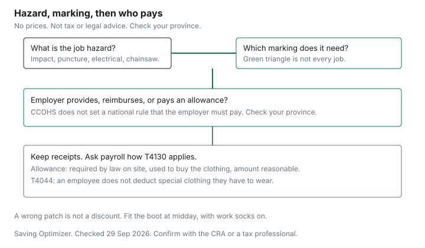

Clothing · Canada
Safety Boots in Canada: CSA Markings, Employer Allowances and Getting Value

Buy safety boots in Canada with the CSA patch your site requires; CCOHS ties each patch to a hazard, such as the green triangle for puncture protection with a Grade 1 toecap. An employer allowance for required protective clothing is not a taxable benefit under the CRA’s T4130 conditions. A safety boot is a tool with a symbol on it. Buying a cheaper pair that lacks the patch your site requires is not a saving. It is the wrong tool. This page reads the symbols from the Canadian Centre for Occupational Health and Safety, then the allowance language from the CRA's employers' guide T4130, then the fit and replacement notes that keep a correct boot from being wasted. It is not legal advice and not tax advice. Employer duties differ by province and by workplace. Confirm with your employer, your province, and the CRA or a tax professional. The employee-deduction side is the work-clothes guide.
Key takeaways
- CCOHS, last revised 2025-02-04, ties each patch to a hazard. A green triangle is puncture protection plus a Grade 1 toecap. The wrong patch is not a bargain.
- T4130 says an allowance for protective clothing is not a taxable benefit only when the employee had to wear it by law, used the allowance to buy it, and the amount is reasonable. A reimbursement has its own tests. Not tax advice.
- T4044 says employees cannot deduct special clothing they have to wear for work. A boot receipt is not a line 22900 claim on that text.
- Fit at midday, with about 12.5 mm of toe room, in the socks you work in. Do not expect the leather to stretch.
- CCOHS says repair or replace worn boots, and replace them after a puncture or impact even if you cannot see the damage. No resoling price is cited. Price adjustments: see the retailer.
CSA green triangle and other markings
The Canadian Centre for Occupational Health and Safety fact sheet on safety footwear, last revised 2025-02-04 and current as of 29 Sep 2026, says protective footwear is for impact, compression, and puncture, among other hazards, and that you choose it for the hazard in front of you. It refers to CSA Standard Z195-14 (R2023), Protective footwear, or other standards your jurisdiction requires.
Select CSA-certified footwear, or other certified footwear if your jurisdiction permits it, with the rating and the sole the conditions need. The sheet also says footwear is marked for slip resistance, and that the mark may be on the packaging, the footwear, or the product sheet. Slip resistance is not the green triangle. Read both.
A green triangle, on that sheet, indicates sole puncture protection with a Grade 1 protective toecap. CCOHS ties it to heavy industrial work, especially construction where sharp objects such as nails are present. A yellow triangle indicates sole puncture protection with a Grade 2 protective toecap, for light industrial work that still needs puncture protection. A blue rectangle is a Grade 1 toecap with no puncture-resistant sole. A grey rectangle is a Grade 2 toecap with no puncture-resistant sole. If the site has nails or other puncture risk, a rectangle is the wrong patch even when the toe cap is Grade 1.
| Marking | What CCOHS says it means | Intended application on that sheet |
|---|---|---|
| Green triangle | Sole puncture protection with a Grade 1 protective toecap | Heavy industrial work, especially construction with sharp objects such as nails |
| Yellow triangle | Sole puncture protection with a Grade 2 protective toecap | Light industrial work that needs puncture protection and toe protection |
| Blue rectangle | Grade 1 protective toecap, no puncture-resistant sole | Industrial work that does not require puncture protection |
| Grey rectangle | Grade 2 protective toecap, no puncture-resistant sole | Industrial and non-industrial work that does not require puncture protection |
| White rectangle, orange omega | Electric-shock protective footwear | Accidental contact with live conductors. Resistance falls with wear and when wet |
| Yellow rectangle, black SD | Static-dissipative footwear | Where a static discharge can hazard workers or equipment. Not for live conductors |
| Red rectangle, white C | Electrically conductive footwear | Where low-power electrical charges can be a hazard. Not for live conductors |
| Dark grey rectangle, M | Metatarsal protection. Toe protection is required with it | Where heavy objects can hurt the top of the foot |
| White label, green fir tree | Chainsaw protection | Forestry and other work with hand-held chainsaws and cutting tools |
The sheet also describes a yellow-triangle case for super-static dissipative footwear, with the same warning not to use it where contact with live conductors can occur. If your site's rule names a grade, buy that grade. A clerk's suggestion is not the rule. Provincial occupational health and safety requirements differ. Check your province. Not legal advice.
Employer allowances and reimbursement
Who pays is a workplace question. CCOHS says that if foot protection is required, the employer should set up a program of selection, fit, training, maintenance, and inspection.
It does not say that every province forces the employer to fund the boots. Do not treat this page as that legal answer. Ask your supervisor what the site accepts, and check the provincial page that applies to you.
If the employer does pay, the tax question is in T4130, Employers' Guide – Taxable Benefits and Allowances, as of 29 Sep 2026. The section "Uniforms and protective clothing" says the employee does not receive a taxable benefit if either of two conditions applies. You supply a distinctive uniform they have to wear while carrying out the duties. Or you provide protective clothing, including safety footwear and safety glasses, designed to protect them from hazards associated with the employment. Regular clothing someone can wear off the job is not the subject of that protective-clothing sentence.
A reimbursement or an accountable advance is a second path. T4130 says it is not a taxable benefit if you require receipts and both of these are met: the cost is reasonable, and by law the employee has to wear the protective clothing on the work site. An allowance where you did not require receipts is not a taxable benefit only if all three of these apply: by law the employee has to wear it on the work site, the employee used the allowance to buy protective clothing, and the amount is reasonable. If one of those fails, do not tell yourself the allowance is tax-free. Laundry or dry cleaning of uniforms and protective clothing, paid by the employer or reimbursed with a receipt, is also not a taxable benefit on that section. Keep the receipts payroll asks for. The employee side, which is different, is guide T4044: you cannot deduct most clothing, and you cannot deduct special clothing you have to wear for your work. A tradesperson's tool deduction in T4044 is not a boot deduction. Not tax advice. Confirm with the CRA or a tax professional. Other employer payments, such as a transit subsidy, have their own pages. One of them is the transit-benefit guide.
| How the boot is paid | What T4130 says about tax |
|---|---|
| Employer supplies the boot | Not a taxable benefit when it is protective clothing, including safety footwear, designed for the employment hazards |
| Reimbursement or accountable advance, with receipts | Not a taxable benefit if the cost is reasonable and, by law, the employee has to wear the protective clothing on the work site |
| Allowance, receipts not required | Not a taxable benefit only if the law requires the clothing on site, the employee used the allowance to buy it, and the amount is reasonable |
| Employee pays and tries to deduct | T4044: you cannot deduct special clothing you have to wear for your work. Most clothing is personal |
Fit and comfort for long shifts
CCOHS says to try new boots around midday, because feet swell. Walk in them.
Toes should be about 12.5 mm from the front. Do not expect the footwear to stretch with wear. If you wear extra socks or arch supports at work, try the boots with those, and check with the manufacturer if an insert affects the protection. The boot should fit snugly at the heel and ankle when laced, and you should lace it fully. High-cut boots provide support against ankle injury. A boot that is correct on the patch and painful at hour six will come off. That is when people get hurt. Comfort is part of the selection, not a luxury grade.
Electric-shock resistance, the sheet warns, is greatly reduced by wet conditions and by wear. A white rectangle with an orange omega is not a promise that lasts forever in a puddle. Static-dissipative and conductive footwear should not be used where you might touch live conductors. Read the warning on the patch you were issued. It is there because the wrong electrical property is dangerous, not because the label is fussy.
Resoling and replacement timing
CCOHS says to use a protective coating to make footwear water-resistant, to inspect regularly for cracks in soles, breaks in leather, or exposed toe caps, and to repair or replace worn or defective footwear. Footwear that has been through a sole penetration or an impact may not show the damage.
The sheet says it is advisable to replace it after such an event. This guide does not cite a resoling price, a kilometre life, or a brand of repair shop. Get a written quote and compare it with a new boot that has the same mark. A resole that voids the certification is not a saving. Ask the repairer and the manufacturer before you assume the patch survives.
Where to buy and price adjust
Mark's is a place households look for this boot, and it is a Triangle partner. Earn and redemption rules are the Mark's and Sport Chek guide.
A 0.4 percent base on a qualifying boot is a small amount next to the cost of the wrong grade. Gift cards do not qualify at Mark's. Alterations do not either, if you are having a boot worked on there. This page does not cite a Mark's price-match or price-adjustment window. See the retailer. A sidewalk winter boot, without a CSA mark, is the winter-boot guide. Do not let a sale on that boot talk you out of the patch your site requires.
If a US-marked boot is in the comparison, whether a surtax applies depends on origin and classification. Check with CBSA (1-800-461-9999) or your carrier. The clothing thresholds are the US clothing orders guide. A duty question does not change the CSA mark.

Sources
- Canadian Centre for Occupational Health and Safety, safety footwear, last revised 2025-02-04, as of 29 Sep 2026. CSA Z195-14 (R2023). Markings, fit including 12.5 mm of toe room, care, and replacement after penetration or impact.
- Canada Revenue Agency, T4130, Employers' Guide – Taxable Benefits and Allowances, uniforms and protective clothing section, as of 29 Sep 2026. Supplied protective footwear. Reimbursement with receipts. Allowance without receipts. Laundry.
- Canada Revenue Agency, Guide T4044, Employment Expenses 2025, as of 29 Sep 2026. Most clothing is personal. You cannot deduct special clothing you have to wear for your work.
- Triangle partners page, as of 29 Sep 2026, for the Mark's gift-card and alteration exclusions. No price-adjustment window is cited. See the retailer. No provincial footwear statute is quoted. Check your province.
Frequently asked questions
What do the CSA symbols on safety boots mean?
CCOHS, last revised 2025-02-04, describes them. A green triangle is sole puncture protection with a Grade 1 protective toecap. A yellow triangle is puncture protection with a Grade 2 toecap. A blue rectangle is Grade 1 toe protection without a puncture-resistant sole, and a grey rectangle is Grade 2 without that sole. Other patches cover electric shock, static dissipation, conductivity, the metatarsals, and chainsaws. Match the patch to the hazard. The sheet points to CSA Standard Z195-14 (R2023), or another standard your jurisdiction requires.
Does my employer have to pay for safety boots?
CCOHS describes how to select footwear and how to run a foot-protection program. It does not set a national rule that every employer must buy the boots. Whether your employer must provide them, pay for them, or leave the cost with you depends on the province and the workplace. Check your province and your employer's own rule. Not legal advice. If they do pay, the tax treatment of that payment is a separate question, on T4130.
Is a safety boot allowance taxable?
T4130, as of 29 Sep 2026, says an allowance for protective clothing is not a taxable benefit when three conditions all apply: by law the employee has to wear the protective clothing on the work site, the employee used the allowance to buy it, and the amount is reasonable. If those are not all true, do not assume the allowance is tax-free. A reimbursement that requires receipts has a different pair of conditions in the same section. Ask payroll, and confirm with the CRA. Not tax advice.
Can I deduct safety boots on my tax return?
Guide T4044 says you cannot deduct the cost of special clothing you have to wear for your work, and that most clothing is a personal expense. On that text, buying the boots yourself does not create an employment deduction because the site requires them. A tradesperson tool deduction in the same guide is not a clothing deduction. Confirm with the CRA or a tax professional. Not tax advice.
How do I get good value on safety boots?
Buy the mark the hazard requires, in a fit you can wear for a shift, from a store whose return window covers a mistake. CCOHS says to repair or replace worn or defective footwear, and to replace boots after a puncture or impact even when the damage is invisible. This page does not cite a resoling price or a Mark's price-adjustment window. See the retailer. Triangle points, if you collect them, are the small number on a correct boot, not a reason to change the patch.
Researched and drafted with AI assistance and fact-checked against official Canadian sources. How we create content.
Disclosure: Discounted retailer gift cards are an offer type. Saving Optimizer may earn a commission if a partner link is added later. No gift-card partnership is claimed. A gift card does not change a tag, a return window, or a points rule. Education only. Not tax or legal advice.